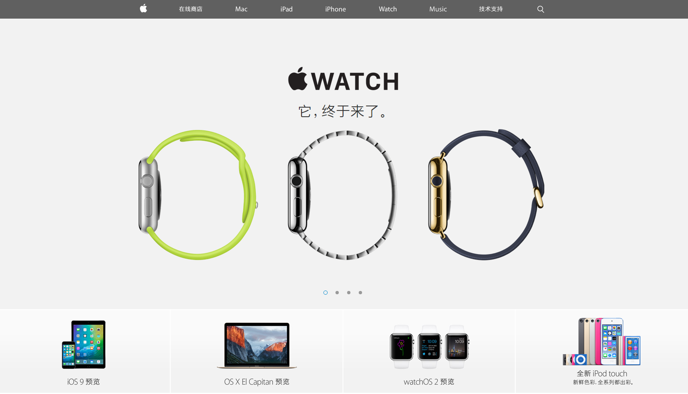
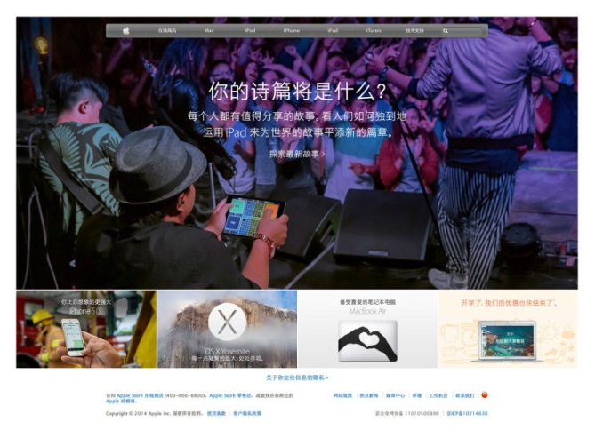

能用一句话说清楚的问题，请不要用两句话来表达，进入正题。
但写文字和做设计，没必要一定保持格调一致，所以，文字??嗦就??嗦点吧，哄自己个开心。
简约设计就是用简单的方法直截了当的达到设计目的。用词总觉得不够精确，再补充，“简单”不是少，是不多、适当、合适；“直截了当”是减少冗余的修饰；“设计目的”是要解决的问题。为什么要强调“简单是不多”？因为我们每个人都脱离不了贪婪的人性，爱占有，潜意识里引导着喜欢多，喜欢无限制的添加。这里还有一个重要问题，就是评判标准，不是我们自己说它够简单够直截了当就是如此，“用户”，用户是最终的审判官。这就有扯出了以用户为中心的设计理念，原则，任何设计不能脱离了使用者而意淫的存在。
举个栗子，设计一个鼠标，首先明确其设计的目的――解决电脑的操控，可能包含“移动光标”、“选择”、“拖拽”、“显示快捷菜单”、“目标切换”等等。如果“直译”目的，那我们就可以在鼠标上设置很多的按键，每个需求一个，按键太多，不好看了，那我们就把每个按键装饰成一颗颗彩色的糖果状，然后OK，设计完成，非常beautiful！但这明显不是一个简约的设计。
反面的例子太多，因为我们身边到处存在着复杂不堪的设计。几十个按键的游戏鼠标、装满了钻石的汽车。还有吗？
正面的例子也很多，王者必是apple。Mac、iMac、MacBook、iPhone，从电脑到Mac，从手机到iPhone，你所感受到的就是简约设计。你可感受到什么是恰到好处，什么到什么是去除冗余。还有一个具有代表性的是日本设计，日本人追求极简的态度从国旗就可以看出来。原研哉的“这样就好”，撇弃多余的装饰。更甚的wabi-sabi概念。
我们更关注的多媒体设计：iOS，从最初的拟物（相对于当时环境，也算比较简洁的设计了。）到目前的扁平化；android设计进化史，从最初的粗糙堆砌，到Material design的简单直观容易理解；小米官网的一次次改版。这些都是跟随着“简约设计”的引导。
??嗦很多，必须进入正题了。我们为什么要选择简约设计？
毋庸置疑的，简单事情容易上手，简约的设计更容易使用。
当整个屏幕只有一个按钮的时候，你会做什么？两个呢？十个呢？
回想一下，你是怎么教你的爸妈使用电脑的（假如有这个场景存在），“点击开始，哦，不是手指，是鼠标，哦，不是不是，是鼠标这个小箭头，直接用鼠标点会砸坏显示器的……”
还记不记得很早以前买手机都会有一本厚厚的使用说明书？而现在，你买一部iPhone还有去看使用数码书吗？
简约的设计会更清晰，主题传达明确
由于减少了多余的装饰，简约的设计能更清晰传达产品意图。在以内容为主，通过合理的排版、交互，没有干扰，用户可以更高效理解掌握产品目的。

苹果官网首页，你所接收到的信息，就是苹果所希望传递出来的――产品。
我们进入一个应用下载页面，屏幕上有两个按钮，一个按钮写着“点击下载”，一个写着“轻轻松松获取，潇潇洒洒玩耍。”你会点哪个？简约设计就是在内容与形式上都直观明确的表达目的。
简约设计在视觉上能更持久的符合大众审美
这点应该结合“时尚、流行”来说。大多数的流行的东西，是通过表象的修饰设计来达到的，当你尽可能的较少修饰，也就避免了“过时”。我们还用苹果说事。

苹果这个官网持续使用了多久？可以肯定的说“很久了”。然真的一直没有过时。随着iOS7的出现，它改版，变的更简约，请相信，新版本也会持续使用很久。
简约标准的设计，可以降低设计后期维护成本
这个“标准”的出现，绝对不是抱大腿，而是因为“标准”是简单的一个维度。简约的设计是标准的设计，它有自己的设计规范，有自己的设计原则。你看了iOS7/iOS8设计规范了吗？你了解Metro设计规范吗？你熟悉google最新的Material Design设计理念了吗？如果否定的回答太多，请相信，你不是一个合格的UI设计师，请迅速补课。
有了这么多的标准化设计，后续更换设计师维护会不会非常轻松？
简约设计更好看，更有韵味
在写这一条的时候，犹豫很久。作为一个设计师，一直觉得好看是一个非常主观的事情，所以不太喜欢用好看来说事。但作为一个设计师，去引导大众接受美的事物是其不可推卸的责任（感觉自己悠然高大了起来）。记得iOS7刚出来，很多人吐槽难看，甚至用行动抵制，庆幸，自己义无反顾的维护了它的美丽。很喜欢日本的设计（标注，骨子里对日本还是很敌对的态度，但设计确实值得学习。），简单中蕴含着优雅韵味。题外话，日本字体太零散，但日本人就是把这么难看的日文字体设计的不得不承认其优秀。简约设计更容易通过留白、疏密产生自然韵律。
简单的设计更容易跨平台平移，满足当下多平台表现的需求
现在的互联网产品，基本都要PC和移动端的标配，用简约的设计，更能同时满足多平台的设计表现需求。google的Material Design设计理念之一就是满足跨平台的需要。
简约设计更具有前瞻性
有没有见过科幻电影里未来的世界？处处是“屏幕”，处处是光影。我曾经讨论过iOS为什么忽然变的如此“扁平”的设计，理由之一就是这个。想想，一面面虚拟的屏幕，上面显示着丰富的信息；一个由光影投射形成的虚拟人物站在你的面前；这些都是在空气中光影组成，假如加入更多的修饰，可行吗？至少在它广为应用的前期是完全不可行的，随着技术的发展，后面再慢慢地发展到细腻、装饰、完全拟真的情况也是完全合适的。
当然，简约设计的好处绝对不止我所罗列的这些，希望你的挖掘和发现。
说这么多简约设计的好处，我们现在来聊聊怎样才能做出简约的设计。
任何事情都有一定的规则或原则，比如做人（不是男女之间的事情，淡定。），每个人都应该有自己的做人原则，不能今天信誓旦旦的说“民主党”好，明天就高调的加入了“共和党”；今天我是你的朋友，明天就面对面捅我一刀。
做简约设计，学习下这些原则会有比较大的帮助。
一、模拟产品
准确的说不是模拟，是分析。要分析产品意图，产品目的。做到每一个像素点都有理有据的服务于产品目的。我做一个app产品，目的是让用户点击我加在里面的广告，用户的留存率活跃度美誉度等等一概不考虑，那首先就要取一个霸气的名字，一定要热门，要和色情挂钩，要让用户以为点击下载还可以赚钱…… app产品设计肯定是广告面积最大，做一些错误的链接，做一些不点广告就无法关闭的弹窗…… 很多设计师会仅仅做一个“美工”的工作，只是把文字改改大小，调调颜色，根本没有自己的思想，所以，要试着去了解产品熟悉产品，明白产品意图。
二、简单明确
所有表达要直接明了，避免让用户产生疑惑。除非产品特殊需要。
场景切换的时候，如果载入需要一段时间，那么必须简单明确的告诉用户正在载入中，不能静默的后台数据载入，让用户无法明确当前所处状态。数据提交成功，简单明确的告诉用户“成功”，失败则告诉失败，而不是直接跳转到下一个发展状态。在整个流程的结尾尤其如此。
三、统一的设计理念
产品的各个组成部分，用相同的设计理念，而不是每个局部一个设计理念。包括排版方式、颜色、交互方式等等。这也是我们在设计时，会先设计若干组成部分（比如网站的几个代表性页面），再提炼出设计规范，最后用这个规范设计完成剩余所有设计。
另外，一般情况下，我们会选择用户已经养成的习惯，比如红色为警告提醒，绿色为鼓励安全，灰色为可以但不鼓励等作为贯穿产品的一致设计理念。
四、用户傻瓜模式
当然不是用户是傻瓜，是要有模拟新用户的思维。大多数情况用户对产品认知是空白的，不要理所当然的认为用户“应该知道这么用”，“应该知道点这个按钮就是开始”。所以要避免以自己的喜好和“专业”角度来做仅仅自己喜欢和好用的设计。
可能还会有些原则，但原则也是一个普遍的情况，偶尔产品允许的情况下也是可以“违反”这些原则的。比如游戏为了渲染气氛，用很多笔墨装饰背景环境，让用户有身临其境的感觉。比如有些产品的主色调就是红色，这时候红色可能就不具有警告功能了。
原则只是一个方向，我们接下来说说怎么基于这些原则来做简约设计的方法。
这个方法仅仅是个人总结，基本是在GOMS原型基础上衍生出来。（站在巨人的肩膀，不会错的太多。）
step1：明确产品设计目的
与上边的原则相辅，在设计开始之前，必须详细分析设计目的。明确了目的，才能朝着争取的方向进行。很多入门设计师完全忽略这个步骤，接到一个网页设计任务，便一头扎入苦苦设计，基本功好的最后能做出一个漂亮但不是提出方想要的设计，基本功差的就只能做出一坨比原型还糟糕的东西。这个明确产品设计目的的过程大多数是和设计提出方（产品经理）沟通来完成的，有时候设计师全程参与产品进程的则可以自己来明确目的。
step2：分析解决办法
这个过程就是设计基本素养体现的时候了。不是告诉你一句话两句话就能提高或解决问题的。
但大体思路依然是围绕设计目的，想各种的表现形式，各种的展现方法，各种的技巧使用，各种的参考案例。设计基础是一门积累的手艺，看的多了，做的多了，思考的多了，也就差不到哪里去了。每次设计都是需要一次次的试错（大神级别的更多的是脑子里的试错，我们普通级别的脑子了试错后，设计出来还可能不是一个优秀方案，就只能是又证明了一个错误的方向。），从试错中寻找一个最佳设计方案。这也是为什么老板都喜欢设计师提供多个方案，因为太多设计师根本没有在脑子试错，一条道走到底出来一个第一关就该被踩死的设计方案。
step3：选择排除方案
对于大神来说根本没有这个过程，我们只讨论普通上进好学有潜力帅气漂亮的设计师。我们做出了两个或多个方案出来，接下来可以邀请产品经理、其他设计师、路人甲等来围观，旁观者清，让他/她们给你提供更进一步的已经和建议。最终选择定稿。
step4：再设计（redesign）
其实上一步已经完成了正常的设计过程，但最为一个有抱负有理想的设计师，每次的设计不能仅仅为了完成任务，而是要每次都能提升自己，从中学习进步。扯大了，真实的说，我是为了引出标题中的《简约至上》，因为我太喜欢这本书了。《简约至上》提供了四个方法来让一个设计变的简单：删除、组织、隐藏、转移。不愧是一本设计的好书，简单的四个方法几乎可解决任何“复杂”设计的瘦身。
总算记得住的都说完了，还有些想说的但没记住的也就只能先憋着了。
说了这么多，真的是应了那句话：简约，不简单。


 在线客服
在线客服 QQ咨询
QQ咨询 010-85951131
010-85951131